El déficit de la balanza de pagos fue de casi 80.000 millones hasta marzo.
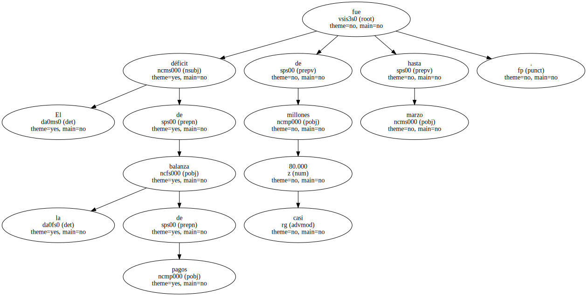Las ventas al extranjero empeoraron 245,8 millardos respecto a 1998.
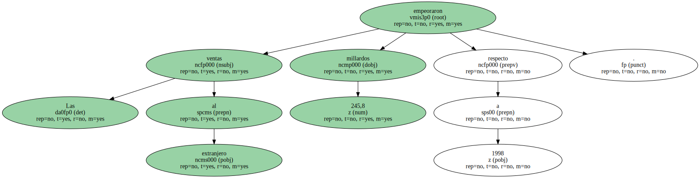El estancamiento de la exportación restará 1,6 puntos al PIB español.
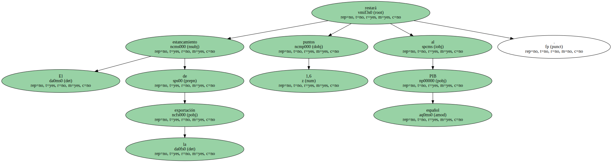Ni el fuerte tirón del turismo durante el primer trimestre del año resulta suficiente para cubrir el desplome que sufren las exportaciones españolas.
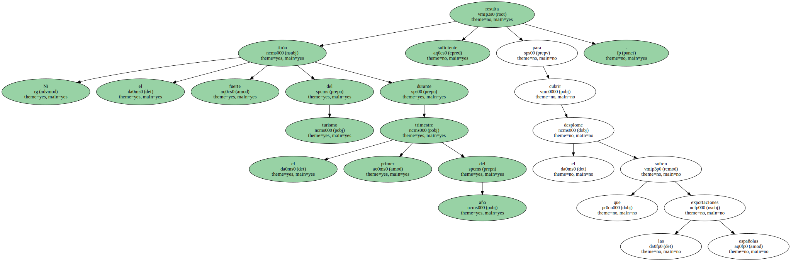De enero a marzo , el déficit por cuenta corriente alcanzó los 79.800 millones de pesetas , frente al superávit de 48.900 millones registrado en igual periodo del año anterior , según informó ayer el Banco de España.
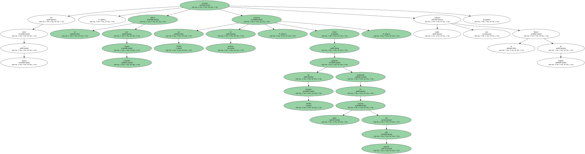Mientras que la balanza comercial ( diferencia entre exportaciones e importaciones ) del primer trimestre empeoró en 245.800 millones respecto al mismo periodo de 1998 , los ingresos netos por turismo sólo han subido en 93.400 millones.
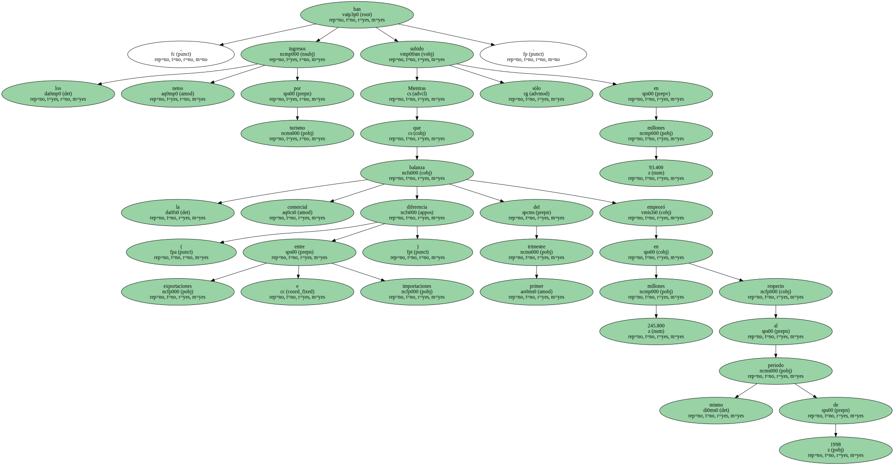Los números rojos del primer trimestre habrían sido aún peores de no ser por la favorable evolución de marzo , mes que se saldó con un déficit de 51.800 millones , un 65% inferior al de 1998.

La fuerte inyección de 88.800 millones de fondos procedentes de la Unión Europea y la mejoría del capítulo de rentas explican el dato de marzo.
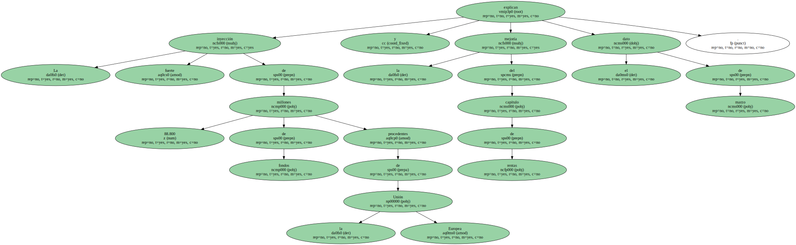El Gobierno cuenta con que el deterioro del sector exterior podrá restar hasta 1,6 puntos al crecimiento económico de 1999 , que se prevé del 3,5%.
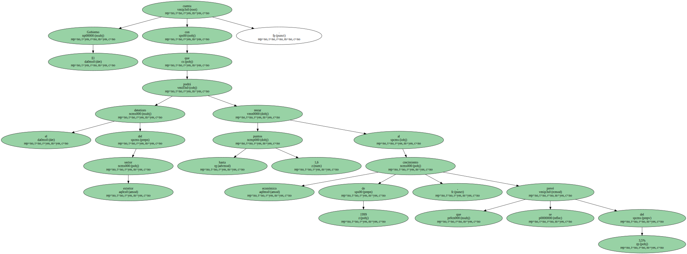En 1998 , el saldo corriente ya registró un déficit de 1,26 billones , después de tres años de superávit.
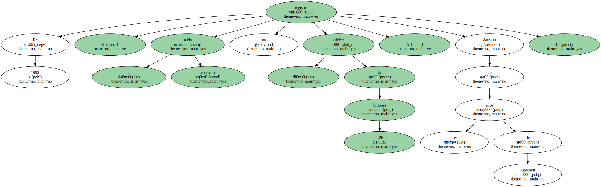Los ingresos por turismo , de 22,3 billones , cubrieron con creces el déficit comercial de 16,6 billones.
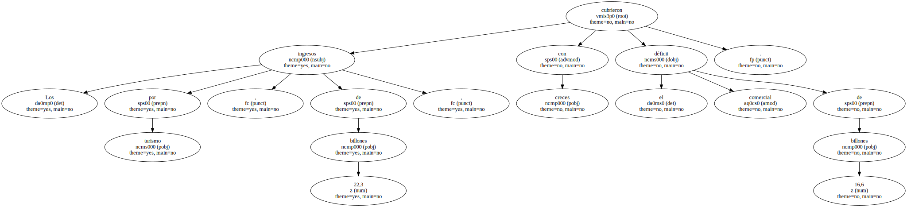Sin embargo , la balanza de rentas puso el saldo corriente en números rojos.
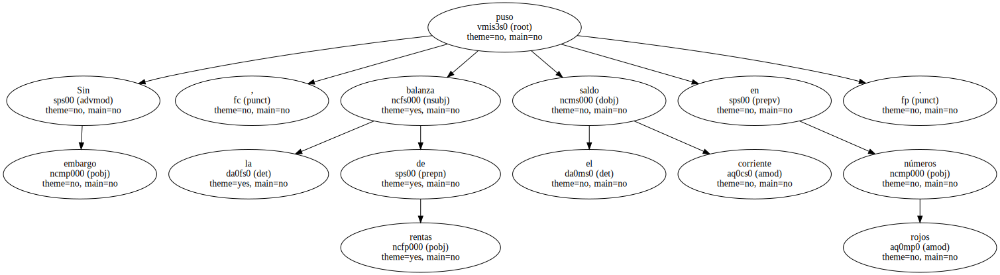Durante el primer trimestre del año , el virtual estancamiento de las exportaciones y el incremento en un 5% de las importaciones han hecho que el déficit comercial ( diferencia entre exportaciones e importaciones ) se sitúe en 795.800 millones.
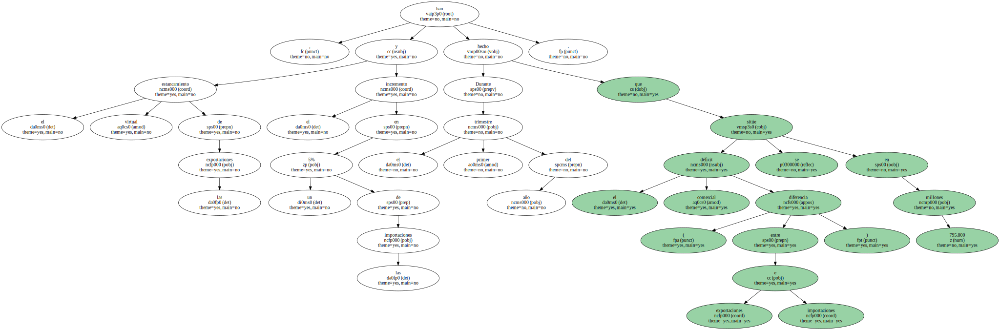Esta cantidad es un 45% superior que el déficit comercial de 550.000 millones registrado en igual periodo del año anterior.
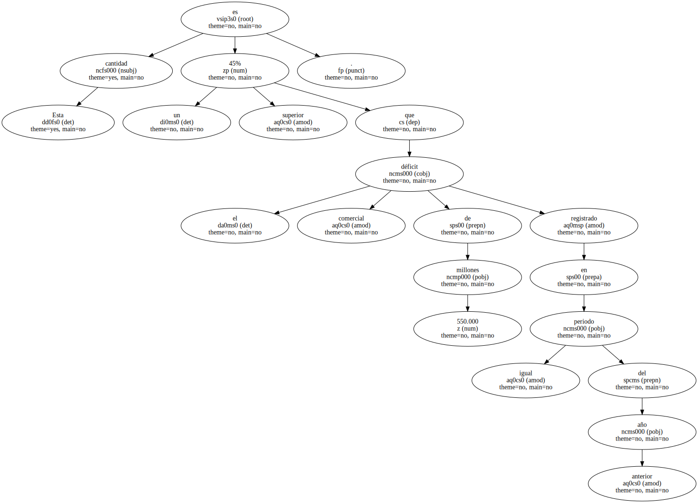El fuerte tirón del turismo sólo ha compensado en parte el deterioro del saldo comercial , pero no lo suficiente.
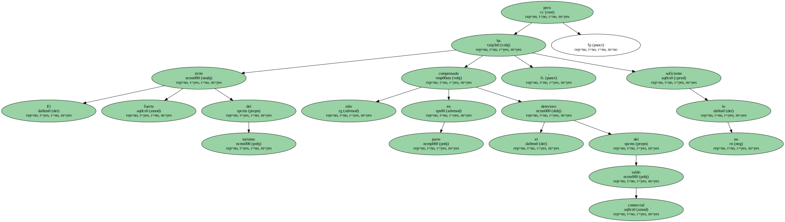En los tres primeros meses del año , los ingresos netos por turismo han sido de 793.000 millones , un 15% más que en 1998.
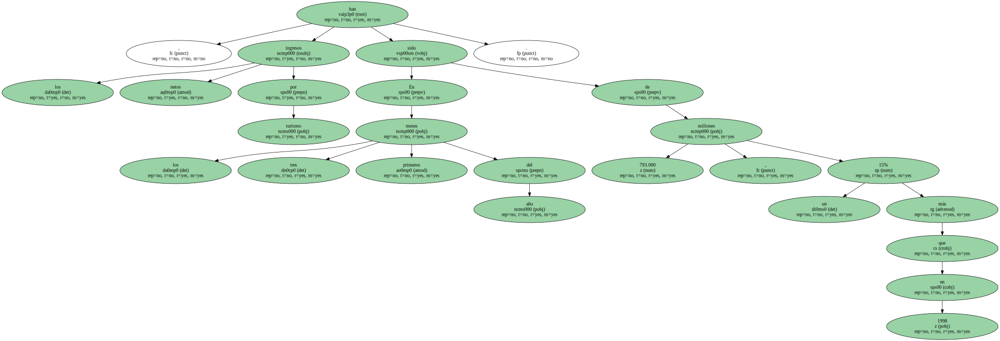La ligera mejoría de la balanza de rentas y de la de transferencias - - que junto a la balanza comercial y la de servicios integran el saldo por cuenta corriente - - tampoco ha bastado para cubrir el deterioro comercial.
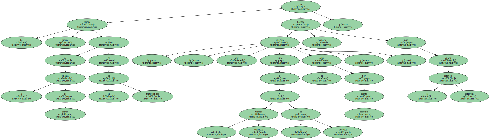En concreto , el déficit de la rúbrica de rentas se situó en 259.200 millones , mientras que el superávit de transferencias fue de 325.200 millones.
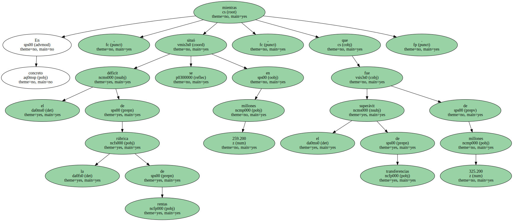La cuenta de capital - - que integra las transferencias del Feder , el Fondo de Cohesión y el Feoga Garantía - - registró hasta marzo un saldo de 272.100 millones , inferior en un 21% al de 1998.
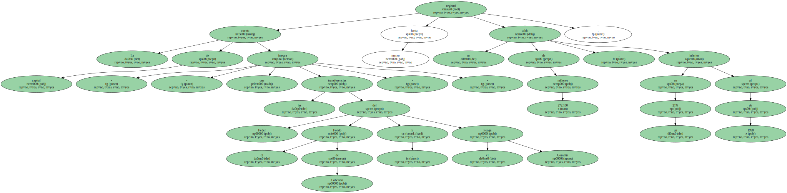Del análisis de la cuenta financiera ( que mide la diferencia entre las inversiones españolas en el exterior y las del extranjero en España ) se desprende la fortaleza de la inversión española.
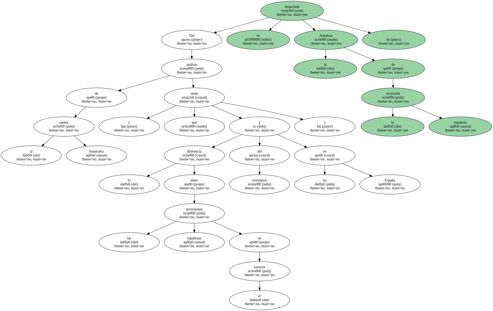En el primer trimestre , el saldo de la cuenta financiera se cerró con unas salidas netas de 1,63 billones , una cantidad muy importante comparada con los 375.000 millones de 1998.
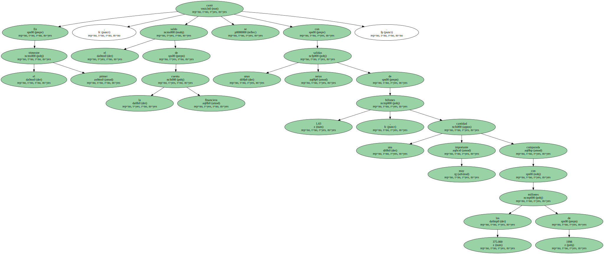En el primer trimestre de 1999 , las reservas de divisas disminuyeron en 1,67 billones , incluyendo la transferencia de reservas al Banco Central Europeo ( BCE ) , por lo que su valor a final de marzo ascendía a 7,6 billones de pesetas.
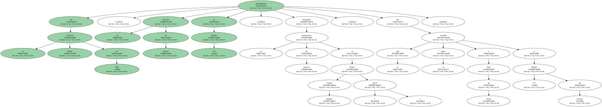